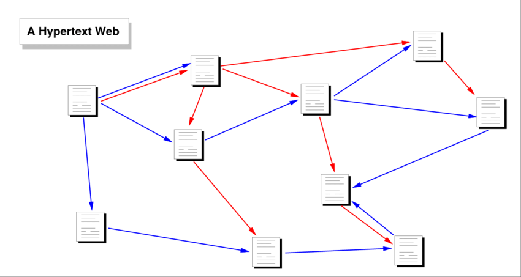

> "The idea of the Web was prompted [>] Go to WWWW to discovery more >> by positive experience of a small “home-brew” personal hypertext system [image]  Figure 2. The Architecture of a Massively Distributed Hypermedia System - Scientific Figure. ResearchGate. used for keeping track of personal information on a distributed project."
> "The model of hypertext with text input has proved sufficiently powerful to express all the user interfaces , while being sufficiently simple to require no training for a computer user [<] << Back to Turing to discovery more
> As hypertext information is transmitted on the network in logical (mark-up) form, each client can interpret this in a way natural for the given platform, making optimal use of fonts, colors, and other human interface resources available on that platform." [reference *][*] The World Wide Web — Tim Berners-Lee, Robert Cailliau, Ari Loutonen, Henrik Frystyk Nielsen, and Arthur Secret, 1994
[Next] >>